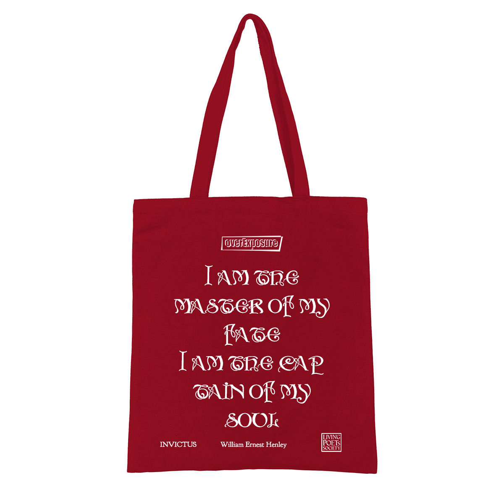

文学赏析|威廉·亨利《不可征服 Invictus》苦难中不被击垮的灵魂|翻译与深度解析
致那些不曾被苦难击垮的人:
这首诗之所以流传至今，并不是因为它乐观和鸡汤，而是因为它诞生于真正的苦难之中。诗题 Invictus 是拉丁语，意思是：Unconquered（不可征服）。
本诗只有四节十六行，却塑造了一种崇高的人格理想：“即使这个世界无法掌控，我依然掌控我的灵魂。”
作者介绍
威廉·欧内斯特·亨利 William Ernest Henley 幼年患骨结核，十几岁时失去一条腿，后来另一条腿也濒临截肢。他长期住院，这首诗写于1875年。当时 William Ernest Henley 只有二十多岁，在极大的身体痛苦和死亡阴影下写下了《Invictus》。
Invictus 不可征服
By William Ernest HenleyOut of the night that covers me,
Black as the pit from pole to pole,
I thank whatever gods may be
For my unconquerable soul.在将我吞没的夜色中，
黑暗，如同深渊，笼罩着整个世界，
我仍感谢——无论是哪个神明——
赐予我不可征服的灵魂。
段落赏析
以黑暗降临开篇，即便如同身处深渊之中，但灵魂并未屈服。”pit” 在英语文学中有非常强的象征意味。一方面常用来指深渊、无底洞，比如：the pit of despair（绝望的深渊）；另外，在一些西方宗教语言系统中，常来指墓穴、地狱深处。黑暗，如同深渊(Black as the pit)——黑得像死亡的阴影和绝望的深渊。”pole to pole” 指南北两极之间。
In the fell clutch of circumstance
I have not winced nor cried aloud.
Under the bludgeonings of chance
My head is bloody, but unbowed.身陷命运无情的魔爪中
我未曾畏缩，也未曾哀号。
在无常命运的重击下，
我头破血流，却脊梁未弯。
段落赏析
痛苦没有让我屈服。满身伤痕，仍然屹立。
Beyond this place of wrath and tears
Looms but the Horror of the shade,
And yet the menace of the years
Finds and shall find me unafraid.在这充满愤怒与泪水的地方之外，
隐隐浮现的，只有那阴间的恐怖。
然而，纵使岁月不断威胁逼迫，
过去未曾，将来也绝不见我流露丝毫怯懦。
段落赏析
这里非常深刻。人生，最大的敌人不是某一次灾难，而是时间的逝去。因为时间最终带来：衰老、死亡、消逝。这一节的震撼之处在于，诗人不寄托于任何宗教式的安慰（不期待天堂，只看到了死亡的黑暗），却单凭人类自身的意志，就完成了对“死亡”和“时间”的宣战。

不可征服-托特帆布包袋——淘宝overExposure官方店有售
It matters not how strait the gate,
How charged with punishments the scroll,
I am the master of my fate,
I am the captain of my soul.无论那扇门有多么狭窄，
无论命运的卷轴写满多少惩罚，
我，是我命运的主人。
我，是我灵魂的统帅。
段落赏析
这首诗最震撼人心、也是流传最广的终章。结语不仅是亨利一生的宣言，更成了人类精神史上最著名的座右铭之一。”Strait the gate”（窄门）：直接源自《圣经》的典故“引到永生，那门是窄的，路是小的，找着的人也少。”（Strait is the gate, and narrow is the way…）。”Charged with punishments the scroll”（写满惩罚的判词/卷轴）：这里的”scroll”（卷轴）指上帝或命运记录人一生罪行与惩罚的账本。即使律法或命运决定要惩罚我、折磨我，我也绝不低头。在全诗的最高音的结尾，亨利把掌控人生的权杖从“神”或“盲目的命运”手中夺了过来，狠狠地交回到了自己手里。我的肉体可以被摧残，我的处境可以被刁难，但我的意志和灵魂，只听从我的号令。
世界可能给不了你想要的模样，但你的态度仍属于你。这首诗的伟大之处就在于此：它承认现实的残酷，承认死亡的恐怖，承认命运的沉重，但它更坚信——即便我的身体被命运摧残，但我的灵魂并不属于命运——我的灵魂，不可征服！
阅读量： 0
本文版权归 byterain 所有。
未经作者同意，禁止以任何形式复制、转载或演绎。
如需转载或引用，请联系作者并获得授权。
原文链接： https://blog.overexposure.media/zh-cn/post/2026/07/william-ernest-henley-invictus-analysis/